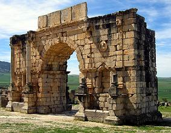

M A R R U E C O S
|
|||
|
En Marruecos, Temara, aparecieron restos del
hombre de Neardenthal, el llamado "Hombre de Rabat". De época romana destacan las ciudades de Tingi (Tetuán), Zilis (Asilah), Lixus, Valentia Banasa, Sala Colonia y Volubilis. De esta última se conservan los restos más impresionantes. Durante el periodo romano se crea una red de carreteras, cuyo inicio se situaba en Tánger. De allí partían dos vías principales, una de ellas hasta Sala (Rabat) recorriendo el litoral atlántico y la segunda llevaba hasta Volubilis, capital del reino del rey Juba II, que incluía Marruecos y Mauritania. Su hijo y sucesor Ptolomeo, fue asesinado por orden de Calígula, quien dividió el reino en dos provincias, dando origen -en el oeste- a la Mauritania Tingitana (actual Marruecos y Mauritania). Los jinetes africanos tuvieron un lugar destacado en el Ejército en las campañas del Rin, el Danubio y el Eufrates. Roma recibía toda clase de productos provenientes de la Tingitania, trigo, aceite, conservas de pescado, garum, madera de tuya, etc. En las regiones de Volubilis y Tánger se han encontrado numerosas fábricas de salazón de pescado y almazaras. También fundó las colonias de Zilis (Asilah), Babba Campestris y Banasa. La dominación romana permaneció hasta principios del siglo V en el área de Tánger. Se supone que las poblaciones beréberes romanizadas conservaron la civilización grecolatina hasta la invasión árabe.
LaracheLa colina de Lixus, se localiza muy próxima a la actual ciudad de Larache. Las salinas más importantes de Marruecos en la antigüedad.Los fenicios establecieron su primera colonia en Lixus hacia el siglo XII a.e.c. buscando cobre y púrpura. Más tarde, los reinos mauritanos y el Imperio Romano se instalaron en las ciudades creadas por aquellos pioneros.Lixus era confín del mundo grecorromano donde Plinio el Viejo situó el mítico Jardín de las Hespérides, allí sería donde Heracles-Hercules habría robado las manzanas de oro del conocimiento y de la inmortalidad al dragón que las custodiaba.Fue un importante puerto pesquero del Imperio. Los arqueólogos se ilusionan con todo lo que puede brindar este yacimiento de 60 hectáreas apenas explorado.Se sabe que en el siglo III, en la ciudad se preparaba el atún capturado en el Atlántico para exportarlo a todo el mundo mediterráneo, como atestiguan los talleres de salazón descubiertos al pie de la colina, en excelente estado de conservación.
Volubilis
A 30 kilómetros al norte de Meknes, hallamos Volubilis la
capital de la provincia romana de Mauritania Tingitana, que comprendía todo el
norte de Marruecos.
En el año 40 el reino de Mauritania
es anexionado al Imperio Romano por el emperador Calígula convirtiéndose en una
de las principales ciudades de la Tingitania y residencia de los procuradores
romanos que gobernaban la provincia.
La ciudad se enriqueció con la
producción y comercialización del aceite de oliva. Las excavaciones han sacado a
la luz
más de 50 almazaras. Tuvo una población cercana a los 20.000
habitantes. En el siglo I ya se habrían construido los principales monumentos y
las suntuosas villas del barrio situado al noroeste.
Recinto amurallado. El perímetro amurallado que alcanzaba los 2.350 m. de longitud,
del que sólo quedan algunos restos restaurados en la parte este de la ciudad desde
la que se accede al conjunto arqueológico y en los flancos de la llamada Puerta
de Tánger. Su espesor medio era de 1,60 m. Tenía 40 torreones y ocho
puertas. Fue construido en los años 168 y 169.
Museo lapidario. En él se exponen numerosas inscripciones, capiteles y
fragmentos de esculturas. También se pueden contemplar algunos mosaicos, pero
los más interesantes se encuentran en su ubicación original, en las villas que
flanquean el Decumanus Máximus, muy interesantes por su contenido documental
e iconológico. Por otra parte, los elementos ornamentales de carácter
geométrico son en muchos casos los mismos que aparecen en el arte bereber hasta
nuestros días. Barrio sur
|
|
 |
Las Termas de Galiano
así llamadas por que en ellas se encontró una inscripción dedicada al
emperador. Ocupan una superficie de más de 1.000 metros cuadrados. A lo
largo de la calle se distingue la sala de las calderas, se han
encontrado restos de bronce de algunas de ellas. El
Foro es de modestas proporciones. En
el lado oeste, se halla el Macellum. En el centro del foro
se han encontrado las ruinas de un edificio que pudo ser un pequeño
templo. Todo el conjunto fue destruido durante los disturbios que se
produjeron en la ciudad a fines del siglo II. La Panadería esta situada en el ángulo noroeste de la plaza, aún pueden apreciarse dos molinos para el trigo, la base del horno y dos artesas de piedra. El Arco del triunfo como otros monumentos de la ciudad permanecieron casi intactos hasta el terremoto de 1755 y fue restaurado en 1933. Fue construido en honor del emperador Caracalla y su esposa Julia Domna en el año 217 como indica la inscripción de su parte superior. |
El Decumanus maximus atraviesa la ciudad de uno a otro extremo desde la puerta de Tánger. Las excavaciones se han realizado en la zona que se extiende desde el arco de triunfo hasta la puerta de Tánger. Estaba flanqueada en este tramo por el palacio de Gordiano y por mansiones suntuosas que formaban el barrio aristocrático.
La Casa del Desultor
La
Casa de las columnas Más restos romanos se han hallado en: BANASA; el foro, un arco de la basílica, un templo capitolino, una rostra y un gran complejo termal. En SALA (Rabat), Han aparecido los pilares de un arco triunfal con tres vanos, tabernaes, un ninfeo. En TAMUDA (Tetuán ) en su museo arqueológico se pueden apreciar los mosaicos de las Tres Gracias de Lixus, enseres domésticos y monedas. En TINGIS (Tánger) se puede visitar en el museo arqueológico el mosaico de la navegación de Venus, hallado en Volubis y restos funerarios. En ZILIL (Dchar Ydid) ha aparecido un gran templo, unas termas y restos de amurallamiento. En noviembre de 2023, en Rabat, sale a la luz un barrio portuario con termas y una necrópolis. Los restos están datados entre los siglos I y II, se han registrado en el recinto histórico de la antigua ciudad de Chellah.
|